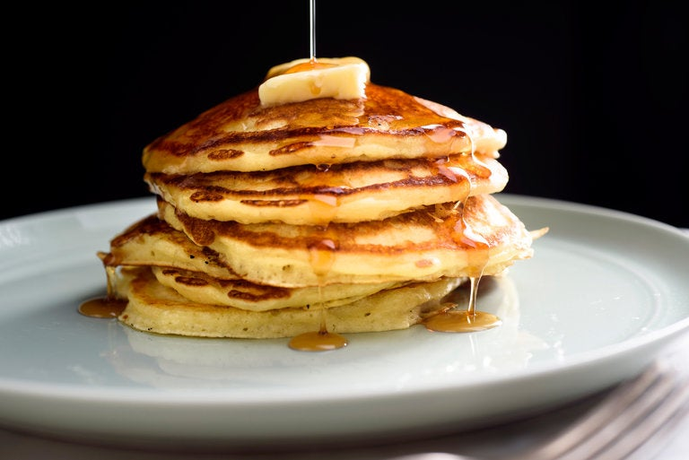

Buttermilk Pancakes

Why you should make this recipe
These pancakes make me think of Saturday mornings in my childhood home. Fluffy, slightly sweet with crispy edges... there's nothing more satisfying than waking up to warm pancakes with butter and maple syrup! These pancakes use buttermilk to achieve a balanced flavor and a light, fluffy texture.
Ingredients
- 2 c AP flour
- 3 T sugar
- 1½ t baking powder
- 1½ t baking soda
- 1 t kosher salt
- 2½ c buttermilk
- 2 large eggs
- 3 T unsalted butter, melted
- vegetable oil for the pan
Steps
- Whisk flour, sugar, baking powder, baking soda and kosher salt together in a bowl. Using the whisk, make a well in the center. Pour the buttermilk into the well and crack eggs into buttermilk. Pour the melted butter into the mixture. Starting in the center, whisk everything together, moving towards the outside of the bowl, until all ingredients are incorporated. Do not overbeat (lumps are fine).
- Let the batter sit at room temperature for about a half-hour. The buttermilk will work its magic and thicken the batter, making for super-fluffy pancakes. Do not skip this step! If cooked immediately, the buttermilk will serve no purpose in the batter.
- Heat a large nonstick griddle or skillet, preferably cast-iron, over low heat for about 5 minutes. Add 1 tablespoon oil to the skillet. Turn heat up to medium–low and using a measuring cup, ladle ⅓ cup batter into the skillet. If you are using a large skillet or a griddle, repeat once or twice, taking care not to crowd the cooking surface.
- Flip pancakes after bubbles rise to surface and bottoms brown, about 2 to 4 minutes. Cook until the other sides are lightly browned. Serve immediately with generous pats of butter and maple syrup!